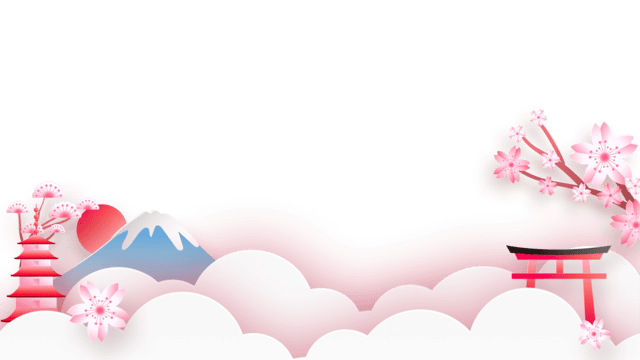
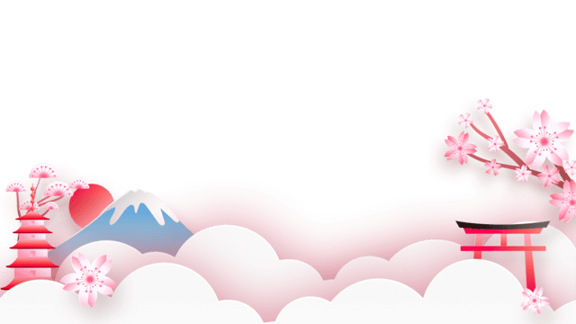

I'm Tawakkalt.
a frontend developer.


I'm a web designer, an artist and a polyglot based in Nigeria. I am passionate about art, korean culture and the creation of beautiful websites.

I started to dive into web design due to how excited I always am while editing my blog site when I first started writing, making it easy to navigate, beautiful to the eyes and full of values yet simple.

If I was offered a set of brushes, a dawing pad and a pencil, it would be like being offered a cake or a pie, because to me, those are the things I find the most joy in; the creation of art.